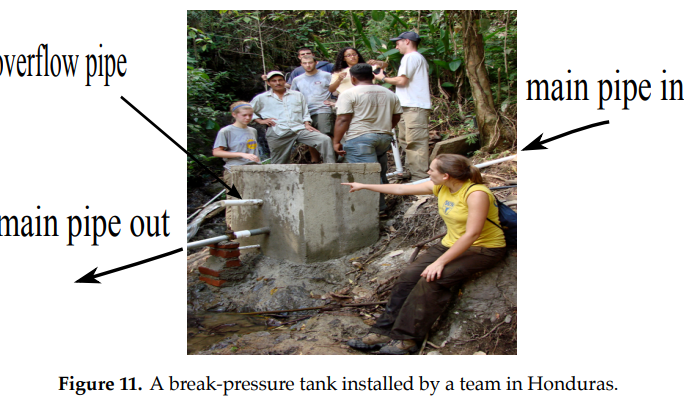

import numpy as np
import matplotlib.pyplot as plt
import matplotlib.pyplot as plt
import numpy as np
from scipy.integrate import solve_ivp
12.1. Logistic Growth and COVID-19#
12.1.1. Introduction#
In this section, we explain the difference between exponential and logistic growth models using COVID-19 data reported by Wang et. al. in their 2020 paper “Prediction of epidemic trends in COVID-19 with logistic model and machine learning technics.”
12.1.2. Exponential Growth#
Let \(y(t)\) represent the size of a specified population with \(y(0)=y_0\) the initial population size at time \(t=0\). The exponential growth model with positive, constant, growth rate \(k\)
is easily solved by separation of variables:
Using the intial condition \(y(0)=y_0\), we obtain
This model is able to predict rapid growth such as shown in the figure below:
{kind=link}
Indeed, if we specify for example \(y(10)=5000\) and \(y(20)=30,000\), we have
Setting these two expressions for \(y_0\) equal to each other gives
Using this value for \(k\), we can now find \(y_0\):
Let’s look at a graph of \(y=y_0e^{kt}\) for these values of \(k\) and \(y_0\).
Show code cell source
k=np.log(6)/10
y0=5000/6
f = lambda t : y0 * np.exp(k*t)
t=np.arange(0,22,.01)
y=f(t)
plt.figure(figsize=(3,3))
plt.gca().set_xticks([0,10,20.])
plt.gca().set_yticks([10000,20000,30000,40000,50000])
plt.plot(t,y,'k',markersize=10)
plt.text(10,5000,'o',color='r')
plt.text(20,30000,'o',color='r')
plt.title('Exponential Growth')
plt.xlabel('t (in days)')
plt.ylabel('number infected')
plt.ylim((0,50000))
plt.xlim((0,22))
plt.show()
{kind=link}
Any exponential growth function with \(y_0>0\) and \(k>0\) is such that \(\lim_{t\rightarrow\infty} y(t) =\infty\) , and thus is not realistic for predicting the spread of COVID-19 if the time horizon is sufficiently long. Observe in our case what happens if we extend, for example, the time horizon from \(t=0\) to \(t=50\).
Show code cell source
f = lambda t : y0 * np.exp(k*t)
t=np.arange(0,50,.01)
y=f(t)
plt.figure(figsize=(3,3))
plt.gca().set_xticks([0,10,20,30,40,50])
plt.gca().set_yticks([100000,200000,300000,400000,500000])
plt.plot(t,y,'k',markersize=10)
plt.text(10,5000,'o',color='r')
plt.text(20,30000,'o',color='r')
plt.title('Exponential Growth')
plt.xlabel('t (in days)')
plt.ylabel('number infected')
plt.ylim((0,500000))
plt.xlim((0,50))
plt.show()
{kind=link}
The actual reported data is shown below, and shows \(y(t)\) leveling off at about 80000.

12.1.3. Logistic Growth Model#
The logistic growth model
is used to describe “s-shaped” or “sigmoidal” growth. Note that when \(y\) is small compared to \(M\), then
so we he have exponential growth.
However, as \(y\) approaches \(M\), the factor \((1-\frac{y}{M})\) approaches 0, and so \(\frac{dy}{dt}\rightarrow 0\).This achieves the “leveling off” of the growth.
Let’s numerically solve the logistic growth model for the values \(k=\log(6)/10\), \(y_0=5000/6\) and \(M=80000\).
Show code cell source
plt.style.use('seaborn-poster')
%matplotlib inline
k=np.log(6)/10
y0=5000/6
M=80000
F = lambda t,y: k*y*(1-y/M)
t_eval = np.arange(0, 50, 0.01)
sol = solve_ivp(F, [0, 50], [y0], t_eval=t_eval)
plt.figure(figsize = (3,3))
plt.plot(sol.t, sol.y[0])
plt.text(10,5000,'o',color='r')
plt.text(20,30000,'o',color='r')
plt.text(30,65000,'o',color='r')
plt.text(50,80000,'o',color='r')
plt.title('Logistic Growth')
plt.xlabel('t (in days)')
plt.ylabel('number infected')
plt.ylim((0,80000))
plt.xlim((0,50))
plt.tight_layout()
plt.show()
C:\Users\pisihara\AppData\Local\Temp\ipykernel_22672\137539061.py:1: MatplotlibDeprecationWarning: The seaborn styles shipped by Matplotlib are deprecated since 3.6, as they no longer correspond to the styles shipped by seaborn. However, they will remain available as 'seaborn-v0_8-<style>'. Alternatively, directly use the seaborn API instead.
plt.style.use('seaborn-poster')
{kind=link}
12.1.4. Exercises#
Exercises
Use separation of variables and partial fractions to obtain the general solution to the logistic model
a) Make a plot of the logistic model solutions for the values \(k=1\), \(M=100\) for \(y_0=10\), \(y_0=50\), \(y_0=90\), and \(y_0=110\).
b) Sketch a slope field to explain qualitatively the behavior of the general logistic model for \(k>0\) and \(M>0\). Sketch solution curves where a) \(y_0\) is close to 0; b) \(y_0\) is roughly \(M/2\); c) \(y_0\) is slightly smaller than \(M\); and d) \(y_0\) is slightly greater than \(M\)
12.1.4.1. Reference#
Wang, P., Zheng, X., Li, J., and Zhu, B. 2020. Prediction of epidemic trends in COVID-19 with logistic model and machine learning technics. Chaos, Solitons, and Fractals, 139(2020), 1-7.